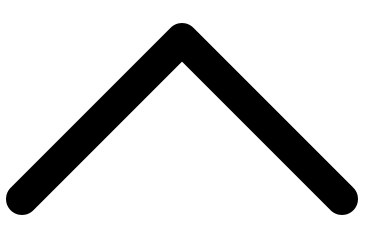

MI TRAYECTORIA, MI
CURRÍCULUM
Descarga mi currículum en PDF
Descargar
Experiencia
-
Prácticas: Diseñador web y diseño de Etiquetas Electrónicas
Noviembre 2025 - ActualidadAEME Group, L'Alcúdia, Valencia
> Referencia: Elvis Moya, AEME Group, L'Alcúdia, Valencia
Diseño y conceptualización de la página web corporativa en WordPress, utilizando HTML, CSS y JavaScript para desarrollar funcionalidades adicionales. Apoyo al equipo de marketing en tareas de diseño web y diseño gráfico. Uso de herramientas y software internos relacionados con el diseño de Etiquetas Electrónicas (ETE). Aplicación de asistentes de IA como ChatGPT, Gemini y Claude para otimizar el trabajo y mejorar la productividad. -
Prácticas: Diseñador web y creador de contenidos digitales
Julio 2024 - Diciembre 2024Ribera Salud, Valencia
> Referencia: Blanca Valenzuela, Ribera Salud, Valencia
Apoyo al equipo digital de Ribera Salud en proyectos de diseño web, diseño gráfico y edición de vídeo. Participación en la creación de interfaces, materiales visuales para redes sociales (utilizando Canva), edición de vídeos corporativos y mantenimiento web. Colaboración en la optimización SEO y revisión de contenidos online. -
Videógrafo y editor de vídeo freelance
Abril 2024Llibreria Xàtiva, Xàtiva, Valencia
> Referencia: Diego Segura Pastor, Llibreria Xàtiva
Trabajo de filmación y edición del vídeo-resumen de la inauguración de la Llibreria Xàtiva. Encargado de la grabación, montaje y postproducción del vídeo final para su difusión en redes sociales y promoción del evento. -
Videógrafo y editor de vídeo freelance
Abril 2024Llibreria de Carcaixent, Carcaixent, Valencia
> Referencia: Carles Segura Pastor, Llibreria de Carcaixent
Responsable de la grabación y edición del vídeo-resumen de la segunda edición del Festival Literario de Carcaixent 2024. Realicé la filmación, el montaje y la postproducción de un vídeo promocional para la difusión del evento y su promoción de cara a la tercera edición de 2025. -
Videógrafo y editor de vídeo
Junio 2022Compañía Teatro Quimera, Valencia
> Referencia: Miguel Arnau, Compañía Teatro Quimera
Contrato temporal. Grabación de las representaciones teatrales infantiles del taller de Teatro Escolapias (Centro Escolapias Valencia). Responsable de la filmación, edición y montaje de cada obra, generando distintos vídeos finales para compartir con las familias. Coordinación con el equipo docente y técnico para adaptar la grabación al espacio estratégico y las necesidades del taller. -
Cámara y editor de vídeo
Junio 2021Audaz, Centro de Coaching Terapéutico, Valencia
> Referencia: Carmen Güemez, Audaz (https://www.seaudaz.com/)
Grabación y edición de vídeos de psicología para el canal de Youtube y las redes sociales de la clínica Audaz, Centro de Coaching Terapéutico de Salud. Responsable de la filmación, el montaje y la postproducción de contenidos para la difusión online.
Formación
-
Máster DWA: Desarrollo Web Avanzado Full Stack - 300 horas
Noviembre 2025 - ActualidadNett Digital School
> Referencia: https://nettdigitalschool.com/
- Módulo de Maquetación Web y CMS.
- Desarrollo Front-End.
- Desarrollo Back-End y BBDD.
- Gestión de Proyectos Web. -
Máster Profesional en Desarrollo y Conceptualización Web (UX-UI) - 720 horas
Octubre 2022 - Mayo 2025CEI Escuela de Diseño y Marketing, Valencia
> Referencia: https://cei.es/
- Módulo de Diseño Web con HTML5 y CSS3.
- Módulo de Diseño Web con WordPress.
- Módulo de Diseño de Interfaces y Experiencia de Usuario (UX-UI).
- Módulo de Desarrollo Web Full Stack Development. -
Máster Profesional en Diseño Web - 60 créditos ECTS, 1500 horas
Octubre 2022 - Mayo 2025Universidad a Distancia de Madrid (UDIMA)
> Referencia: https://www.udima.es/
- Programación y diseño web con HTML5.
- Maquetación con CSS3.
- Diseño web con WordPress.
Cursos y certificaciones
-
Curso en Manipulación de Alimentos y Alergias Alimentarias
Junio 2025Emitido por QUALIDAE
> Referencia: https://www.curso-manipuladordealimentos.es/
Programas y software
Diseño Web
- Visual Studio Code
- WordPress
- HTML
- CSS
- JavaScript
- Git / GitHub
Diseño UX-UI
- Figma
Edición de vídeo
- Wondershare Filmora
- iMovie
Diseño gráfico
- Canva
- GIMP
Idiomas
